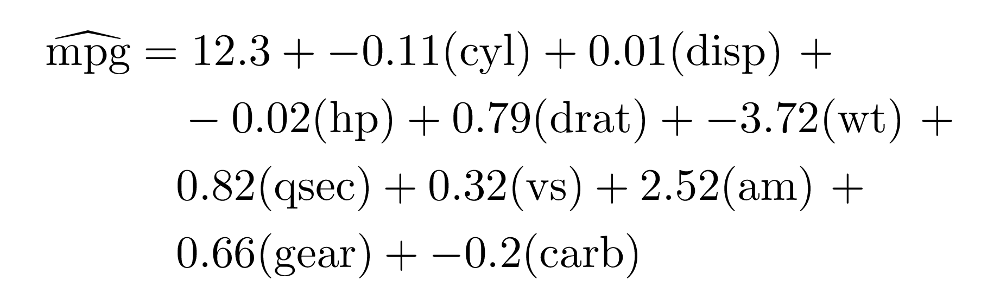

The goal of equatiomatic is to reduce the pain associated with writing LaTeX code from a fitted model. In the future, the package aims to support any model supported by broom; so far it has only been tested with lm and glm models and, at present, only supports binomial glm models (i.e., not ordinal or multinomial models).
Basic usage

The gif above shows the basic functionality.
To convert a model to LaTeX, feed a model object to extract_eq():
library(equatiomatic)
# Fit a simple model
mod1 <- lm(mpg ~ cyl + disp, mtcars)
# Give the results to extract_eq
extract_eq(mod1)
#> $$
#> \text{mpg} = \alpha + \beta_{1}(\text{cyl}) + \beta_{2}(\text{disp}) + \epsilon
#> $$The model can be built in any standard way—it can handle shortcut syntax:
mod2 <- lm(mpg ~ ., mtcars)
extract_eq(mod2)
#> $$
#> \text{mpg} = \alpha + \beta_{1}(\text{cyl}) + \beta_{2}(\text{disp}) + \beta_{3}(\text{hp}) + \beta_{4}(\text{drat}) + \beta_{5}(\text{wt}) + \beta_{6}(\text{qsec}) + \beta_{7}(\text{vs}) + \beta_{8}(\text{am}) + \beta_{9}(\text{gear}) + \beta_{10}(\text{carb}) + \epsilon
#> $$
When using categorical variables, it will include the levels of the variables as subscripts:
mod3 <- lm(Sepal.Length ~ Sepal.Width + Species, iris)
extract_eq(mod3)
#> $$
#> \text{Sepal.Length} = \alpha + \beta_{1}(\text{Sepal.Width}) + \beta_{2}(\text{Species}_{\text{versicolor}}) + \beta_{3}(\text{Species}_{\text{virginica}}) + \epsilon
#> $$It helpfully preserves the order the variables are supplied in the formula:
set.seed(8675309)
d <- data.frame(cat1 = rep(letters[1:3], 100),
cat2 = rep(LETTERS[1:3], each = 100),
cont1 = rnorm(300, 100, 1),
cont2 = rnorm(300, 50, 5),
out = rnorm(300, 10, 0.5))
mod4 <- lm(out ~ cont1 + cat2 + cont2 + cat1, d)
extract_eq(mod4)
#> $$
#> \text{out} = \alpha + \beta_{1}(\text{cont1}) + \beta_{2}(\text{cat2}_{\text{B}}) + \beta_{3}(\text{cat2}_{\text{C}}) + \beta_{4}(\text{cont2}) + \beta_{5}(\text{cat1}_{\text{b}}) + \beta_{6}(\text{cat1}_{\text{c}}) + \epsilon
#> $$
Appearance
You can wrap the equations so that a specified number of terms appear on the right-hand side of the equation using terms_per_line (defaults to 4):
extract_eq(mod2, wrap = TRUE)
#> $$
#> \begin{aligned}
#> \text{mpg} &= \alpha + \beta_{1}(\text{cyl}) + \beta_{2}(\text{disp}) + \beta_{3}(\text{hp})\ + \\
#> &\quad \beta_{4}(\text{drat}) + \beta_{5}(\text{wt}) + \beta_{6}(\text{qsec}) + \beta_{7}(\text{vs})\ + \\
#> &\quad \beta_{8}(\text{am}) + \beta_{9}(\text{gear}) + \beta_{10}(\text{carb}) + \epsilon
#> \end{aligned}
#> $$
extract_eq(mod2, wrap = TRUE, terms_per_line = 6)
#> $$
#> \begin{aligned}
#> \text{mpg} &= \alpha + \beta_{1}(\text{cyl}) + \beta_{2}(\text{disp}) + \beta_{3}(\text{hp}) + \beta_{4}(\text{drat}) + \beta_{5}(\text{wt})\ + \\
#> &\quad \beta_{6}(\text{qsec}) + \beta_{7}(\text{vs}) + \beta_{8}(\text{am}) + \beta_{9}(\text{gear}) + \beta_{10}(\text{carb}) + \epsilon
#> \end{aligned}
#> $$
When wrapping, you can change whether the lines end with trailing math operators like + (the default), or if they should begin with them using operator_location = "end" or operator_location = "start":
extract_eq(mod2, wrap = TRUE, terms_per_line = 4, operator_location = "start")
#> $$
#> \begin{aligned}
#> \text{mpg} &= \alpha + \beta_{1}(\text{cyl}) + \beta_{2}(\text{disp}) + \beta_{3}(\text{hp})\\
#> &\quad + \beta_{4}(\text{drat}) + \beta_{5}(\text{wt}) + \beta_{6}(\text{qsec}) + \beta_{7}(\text{vs})\\
#> &\quad + \beta_{8}(\text{am}) + \beta_{9}(\text{gear}) + \beta_{10}(\text{carb}) + \epsilon
#> \end{aligned}
#> $$
By default, all text in the equation is wrapped in \text{}. You can optionally have the variables themselves be italicized (i.e. not be wrapped in \text{}) with ital_vars = TRUE:
extract_eq(mod2, wrap = TRUE, ital_vars = TRUE)
#> $$
#> \begin{aligned}
#> mpg &= \alpha + \beta_{1}(cyl) + \beta_{2}(disp) + \beta_{3}(hp)\ + \\
#> &\quad \beta_{4}(drat) + \beta_{5}(wt) + \beta_{6}(qsec) + \beta_{7}(vs)\ + \\
#> &\quad \beta_{8}(am) + \beta_{9}(gear) + \beta_{10}(carb) + \epsilon
#> \end{aligned}
#> $$
R Markdown and previewing
If you include extract_eq() in an R Markdown chunk with results="asis", knitr will render will render the equation.
Alternatively, you can run the code interactively, copy/paste the equation to where you want it in your document, and make any edits you’d like.
If you install texPreview you can use the preview() function to preview the equation in RStudio:

Both extract_eq() and preview() work with magrittr pipes, so you can do something like this:
Extra options
There are several extra options you can enable with additional arguments to extract_eq()
Actual coefficients
You can return actual numeric coefficients instead of Greek letters with use_coefs = TRUE:
extract_eq(mod1, use_coefs = TRUE)
#> $$
#> \text{mpg} = 34.66 - 1.59(\text{cyl}) - 0.02(\text{disp}) + \epsilon
#> $$By default, it will remove doubled operators like “+ -”, but you can keep those in (which is often useful for teaching) with fix_signs = FALSE:
extract_eq(mod1, use_coefs = TRUE, fix_signs = FALSE)
#> $$
#> \text{mpg} = 34.66 + -1.59(\text{cyl}) + -0.02(\text{disp}) + \epsilon
#> $$
This works in longer wrapped equations:
extract_eq(mod2, wrap = TRUE, terms_per_line = 3,
use_coefs = TRUE, fix_signs = FALSE)
#> $$
#> \begin{aligned}
#> \text{mpg} &= 12.3 + -0.11(\text{cyl}) + 0.01(\text{disp})\ + \\
#> &\quad -0.02(\text{hp}) + 0.79(\text{drat}) + -3.72(\text{wt})\ + \\
#> &\quad 0.82(\text{qsec}) + 0.32(\text{vs}) + 2.52(\text{am})\ + \\
#> &\quad 0.66(\text{gear}) + -0.2(\text{carb}) + \epsilon
#> \end{aligned}
#> $$
Beyond lm()
You’re not limited to just lm models! Try out logistic regression with glm():
set.seed(8675309)
d <- data.frame(out = sample(0:1, 100, replace = TRUE),
cat1 = rep(letters[1:3], 100),
cat2 = rep(LETTERS[1:3], each = 100),
cont1 = rnorm(300, 100, 1),
cont2 = rnorm(300, 50, 5))
mod5 <- glm(out ~ ., data = d, family = binomial(link = "logit"))
extract_eq(mod5, wrap = TRUE)
#> $$
#> \begin{aligned}
#> \log\left[ \frac { P( \text{out} = \text{1} ) }{ 1 - P( \text{out} = \text{1} ) } \right] &= \alpha + \beta_{1}(\text{cat1}_{\text{b}}) + \beta_{2}(\text{cat1}_{\text{c}}) + \beta_{3}(\text{cat2}_{\text{B}})\ + \\
#> &\quad \beta_{4}(\text{cat2}_{\text{C}}) + \beta_{5}(\text{cont1}) + \beta_{6}(\text{cont2}) + \epsilon
#> \end{aligned}
#> $$Extension
This project is brand new. If you would like to contribute, we’d love your help! We are particularly interested in extending to more models. At present, we have only tested lm and glm, but hope to support any model supported by broom in the future.
Code of Conduct
Please note that the ‘equatiomatic’ project is released with a Contributor Code of Conduct. By contributing to this project, you agree to abide by its terms.